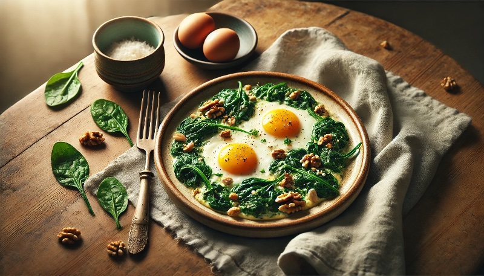
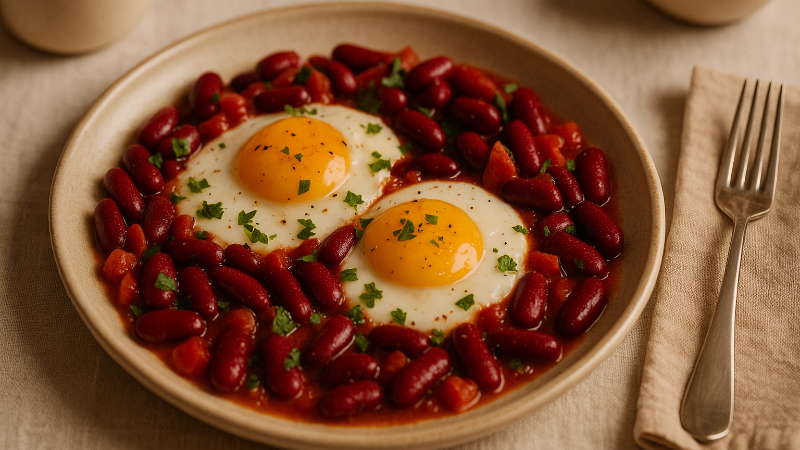
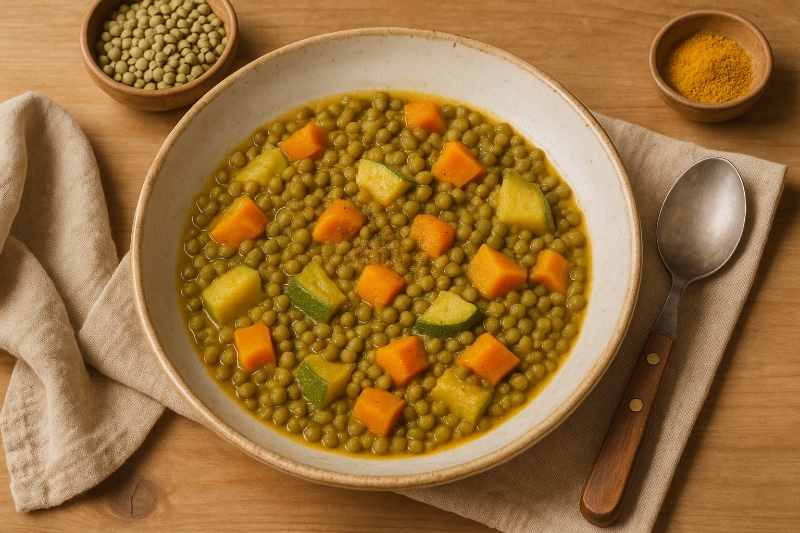
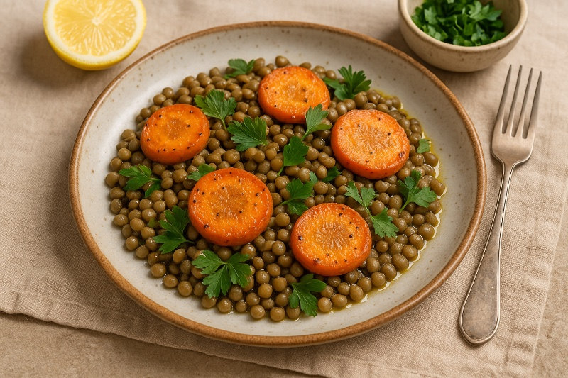

Книга рецептов
для
Натальи
Собрана с любовью
для вашего здоровья и спокойствия
сентябрь 2025
Дорогая Наталья!
Поздравляю вас с пятым месяцем нашего пути! Гемоглобин с 64 поднялся до 109 — это невероятная победа вашего организма и вашей дисциплины. Вы доказали себе и всем, что системный подход творит чудеса.
В этой подборке собраны блюда с максимальным содержанием железа — печень, говядина, бобовые, яйца с зеленью. Каждое из них поможет закрепить результаты перед поездкой и довести гемоглобин до заветных 120.
А для путешествия выберите 3-4 простых рецепта, которые можно адаптировать под дорожные условия. Например, яичницу с фасолью легко приготовить на портативной плитке, а суп-пюре из чечевицы можно взять в термосе.
Продолжайте в том же духе — вы уже близки к полному восстановлению!
С восхищением вашими результатами,
Доктор Света

Тёплая гречневая каша с яйцом и зеленью
железо++ЖКТэнергия
Наталья, это ваше идеальное утро — гречка даст железо, яйцо усилит его усвоение, а зелень добавит витамина С. Готовьте двойную порцию вечером, чтобы утром только разогреть. В дорогу возьмите отварные яйца отдельно — их легко съесть даже в машине.
Ингредиенты
- Гречка — 3 ст.л.
- Яйцо — 1 шт.
- Свежая зелень — 1 ст.л.
- Соль — щепотка
Приготовление
- Отварите промытую гречку до мягкости (15 минут).
- Сварите яйцо всмятку или вкрутую.
- Выложите кашу в тарелку, нарежьте яйцо, посыпьте зеленью и посолите.

Яичница с орехами и тушёным шпинатом
железо++сердцекровь
Шпинат — чемпион по железу среди зелени. Сочетание с яйцами и орехами делает усвоение максимальным. Шпинат можно заменить на вашу любимую брокколи — железа чуть меньше, но вкус привычнее. Орехи измельчите заранее и храните в баночке.
Ингредиенты
- Яйцо — 2 шт.
- Шпинат — 1 горсть
- Орехи (грецкие или миндаль) — 1 ст.л.
- Оливковое масло — 1 ч.л.
- Соль — по вкусу
Приготовление
- На сковороде с маслом потушите шпинат 2 минуты.
- Вбейте яйца, посолите, готовьте до желаемой консистенции.
- Посыпьте измельченными орехами перед подачей.

Пшенная каша с тыквой и грецкими орехами
железо+энергияосень
Осенняя классика! Тыква даст бета-каротин для кожи, пшено — железо, орехи — полезные жиры. Кашу можно сварить с вечера, а утром разогреть с ложкой МСТ масла. Корицу добавляйте щедро — она улучшает усвоение железа.
Ингредиенты
- Пшено — 50г
- Тыква — 80г
- Грецкие орехи — 15г
- Вода — 200мл
- Мед — 1 ч.л.
- Корица — щепотка
Приготовление
- Нарежьте тыкву кубиками, залейте водой и варите 5 минут.
- Добавьте промытое пшено, варите еще 10 минут до готовности.
- Добавьте мед, корицу и измельченные орехи.

Яичница с красной фасолью
железо++белокбыстро
Фасоль — рекордсмен по железу среди бобовых! Используйте консервированную для экономии времени, только промойте от лишней соли. В поездку возьмите баночку фасоли — с яйцами всмятку получится полноценный обед даже на природе.
Ингредиенты
- Яйца — 2 шт.
- Красная фасоль консервированная — 80г
- Помидор — 1 шт.
- Оливковое масло — 1 ч.л.
- Зелень — по вкусу
- Соль, перец — по вкусу
Приготовление
- Нарежьте помидор, обжарьте на масле 2 минуты.
- Добавьте промытую фасоль, прогрейте.
- Вбейте яйца, посолите, готовьте 3-4 минуты. Посыпьте зеленью.
Печень куриная с гречкой и луком
железо+++кровьэнергия
Наталья, это ваше железное оружие! Печень — абсолютный лидер по содержанию гемового железа. Готовьте 2-3 раза в неделю, как вы уже привыкли. Сметана смягчит вкус и добавит кальций. Можете превратить в паштет — измельчите готовую печень блендером.
Ингредиенты
- Печень куриная — 150г
- Гречка — 60г
- Лук — 1 шт.
- Сметана — 1 ст.л.
- Масло растительное — 1 ч.л.
- Соль, перец — по вкусу
Приготовление
- Отварите гречку до готовности (15 минут).
- Обжарьте лук до золотистости, добавьте печень.
- Готовьте печень 5-7 минут, добавьте сметану, потушите еще 2 минуты.
- Подавайте с гречкой.

Говядина тушеная с гречкой
железо+++энергиясытость
Говядина + гречка = двойной удар по анемии! Томатная паста содержит витамин С, который улучшает усвоение железа. Готовьте сразу на 2 дня — на второй день блюдо становится еще вкуснее. В термосе сохранится горячим до 6 часов.
Ингредиенты
- Говядина нежирная — 120г
- Гречка — 50г
- Морковь — 1 шт.
- Лук — 0.5 шт.
- Томатная паста — 1 ч.л.
- Вода — 300мл
- Соль, перец — по вкусу
Приготовление
- Нарежьте говядину, обжарьте до корочки.
- Добавьте нарезанные овощи, томатную пасту, воду.
- Тушите 15 минут, добавьте гречку и готовьте еще 10 минут.

Суп-пюре из чечевицы с куркумой
железо++суставыиммунитет
Красная чечевица варится быстрее всех бобовых — всего 15 минут! Куркума с имбирем создают противовоспалительный эффект. Суп идеален для термоса в дорогу. Добавьте ложку МСТ масла перед подачей для лучшего усвоения куркумы.
Ингредиенты
- Красная чечевица — 80г
- Морковь — 1 шт.
- Лук — 1 шт.
- Куркума — 1 ч.л.
- Имбирь свежий — 5г
- Вода — 500мл
- Соль — по вкусу
Приготовление
- Обжарьте нарезанные овощи с куркумой и тертым имбирем.
- Добавьте чечевицу и воду, варите 15 минут.
- Пробейте блендером до кремовой консистенции, посолите.
Борщ вегетарианский со сметаной
железо+детоксмикрофлора
Свёкла — ваш любимый овощ и отличный источник железа! Фасоль добавит белок, капуста — клетчатку для кишечника. Варите большую кастрюлю — борщ становится вкуснее на второй день. В дорогу залейте в термос без сметаны, добавите при подаче.
Ингредиенты
- Свекла — 1 шт.
- Капуста — 100г
- Фасоль консервированная — 80г
- Морковь — 0.5 шт.
- Лук — 0.5 шт.
- Томатная паста — 1 ст.л.
- Вода — 500мл
- Сметана — для подачи
Приготовление
- Натрите свеклу и морковь, обжарьте с луком и томатной пастой.
- Добавьте воду, доведите до кипения, добавьте капусту.
- Варите 15 минут, добавьте фасоль, варите еще 5 минут.
- Подавайте со сметаной.

Тушёная чечевица с овощами
железо++кровьмикрофлора
Зеленая чечевица держит форму после варки — идеально для гарнира. Тмин улучшает пищеварение и предотвращает вздутие от бобовых. Готовое блюдо храните в контейнере до 3 дней, разогревайте порционно с ложкой воды.
Ингредиенты
- Зелёная чечевица — 70 г
- Морковь — ½ шт.
- Кабачок — ½ шт.
- Тмин, куркума — по щепотке
- Вода — 300 мл
Приготовление
- Замочите чечевицу на 2 часа (можно пропустить).
- Нарежьте овощи кубиками, обжарьте со специями 3 минуты.
- Добавьте чечевицу и воду, тушите 20 минут до мягкости.

Салат из чечевицы с запечённой морковью
железо++кровьлегкость
Запекание — ваш любимый способ готовки! Морковь становится сладкой и карамельной. Отварите чечевицу заранее и храните в холодильнике — так салат собирается за 5 минут. Лимонный сок обязателен — витамин С усиливает усвоение железа.
Ингредиенты
- Отварная чечевица — 100 г
- Морковь — 1 шт.
- Оливковое масло — 1 ч.л.
- Лимонный сок — по вкусу
- Зелень — по вкусу
Приготовление
- Нарежьте морковь брусочками, запеките при 200°C 15 минут.
- Смешайте теплую морковь с чечевицей.
- Заправьте маслом и лимонным соком, посыпьте зеленью.
Тыквенный крем-суп с имбирём
иммунитеткожаосень
Осенняя классика для иммунитета! Имбирь согреет и защитит от простуд. Льняное масло добавляйте в готовый суп — омега-3 для кожи и гормонов. Суп прекрасно замораживается порционно — удобно для быстрых ужинов.
Ингредиенты
- Тыква — 150 г
- Картофель — ½ шт.
- Имбирь свежий — ломтик 1 см
- Вода — 300 мл
- Льняное масло — 1 ч.л.
- Соль, мускатный орех — щепотка
Приготовление
- Нарежьте тыкву и картофель кубиками, залейте водой.
- Добавьте тертый имбирь, варите 15 минут.
- Пробейте блендером, добавьте специи и масло при подаче.

Творожная запеканка с семенами льна
гормонысонсосуды
Ваш любимый творог в новом формате! Семена льна — фитоэстрогены для гормонального баланса. Запеканка хранится 3 дня, можно есть холодной как десерт. Вместо стевии попробуйте ложечку вашей любимой кураги, измельченной в пюре.
Ингредиенты
- Творог 5% — 200г
- Яйцо — 1 шт.
- Семена льна молотые — 2 ст.л.
- Ванилин — щепотка
- Стевия — по вкусу
Приготовление
- Смешайте творог с яйцом, добавьте молотые семена льна.
- Добавьте ванилин и подсластитель, перемешайте.
- Выложите в форму, запекайте при 180°C 20-25 минут.